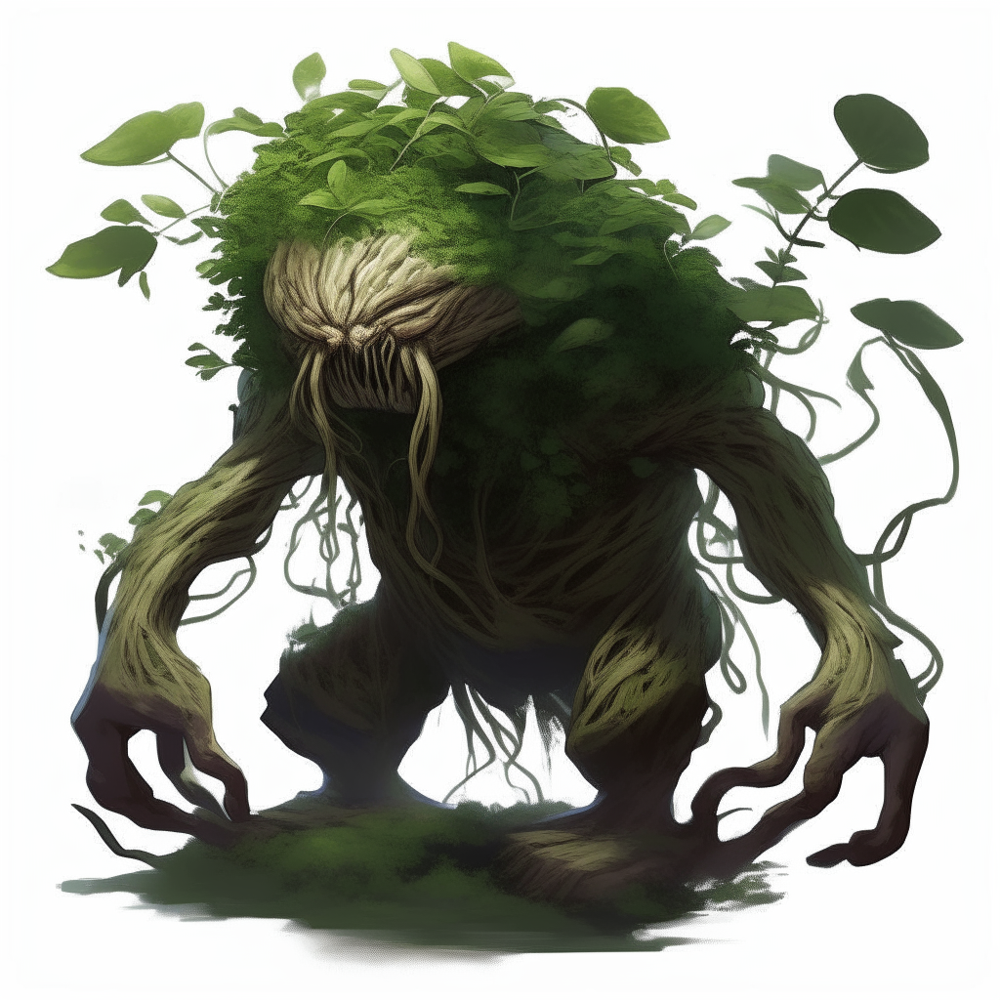

LUVKIA
LUVBURGEON

Es un Pokemon tipo Planta-Lucha.Luvburgeon ha extendido sus extensos sistemas de raíces a gran profundidad a lo largo de los años. Viven vidas solitarias en elaboradas redes de túneles. Las semillas ahora brotan por toda la espesa capa de hojas de Luvburgeon. Estas semillas proporcionan sustento a otros Pokémon y alimentan ataques poderosos cuando el peligro amenaza los túneles de Luvburgeon. Con un cuerpo robusto y una gran cantidad de energía almacenada, los Luvburgeon defienden ferozmente su territorio contra cualquier intruso. .png)